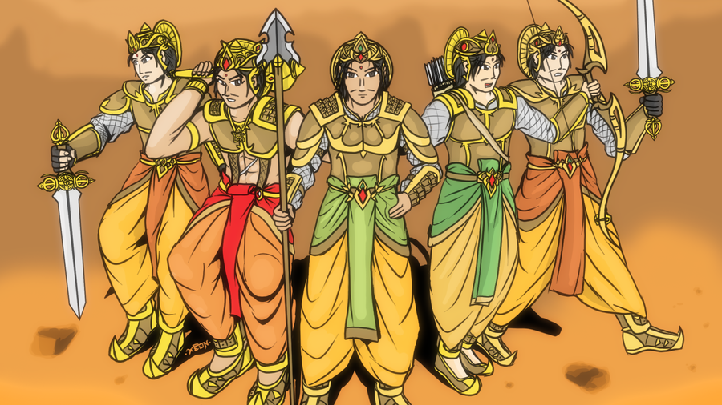

The kingdom of Hastinapura,ruled by the ferocious kuru clan,ever pleasant and pompous is now saddened as their king,King Pandu decided to sacrifice the throne and to live in the forests as an ascetic. What made him do that?It so happened that the king was out hunting in the forest and he happened to spot a deer couple.Pandu drew out his arrow and released it towards a deer striking it in it's heart.Then,something unexpected happened.The unhurt deer transformed into a sage and the other into a woman,his wife.
The sage was actually spending time with his wife as a deer.Heartbroken,the sage cursed Pandu that whenever he would touch his wife out of love,that would be his last moment.And so saying,the sage passed away along with his wife.Pandu was distraught.If he was not allowed to touch his wife,how would he father children and provide a heir to the throne?.After giving it a fair bit of thought pandu thought the only way to compensate for the sin he committed was to leave all his kingly pleasures behind and lead his life as an ascetic.Thus,pandu along with his two wives 'Kunti' and 'Madri' set out for the forest.
The throne then went to Dhritharashtra,the older brother of pandu.As dhritharashtra was blind by birth,even though he excelled in warfare, the throne was given to Pandu.Dhritharashtra had a wife named 'Gandhari'.He was worried as gandhari was not able to provide any heir to him.It was said that gandhari would give birth to a 100 sons.But that wasn't happening.Someway or other gandhari finally became pregnant.Dhritharashtra was delighted ,as pandu was not allowed to touch his wife he would have no sons and hence the throne would eventually go to dhritharasthra's son.
Hearing the news of gandhari's pregnance,pandu thought i want to have children too.He expressed this desire to kunti.Kunti said,"I was blessed by rishi durvasa that i can invoke any god and have a son by him".Pandu's joy knew no bounds.He immediately agreed to it.So,first kunti invoked Dharma, god of virtue, justice and morality and the son thus produced was named 'Yudhisthira'.Then kunti invoked Vayu,the wind god and had a son named 'Bheema'.Then kunti invoked Indra,the god of lightning and the son thus born was named 'Arjuna'.As madri was also pandu's wife he thought to give her also the pleasure of motherhood and asked kunti to teach her the mantra.Thus,madri invoked the 'Ashwini-Kumaras',the twin gods of healing and had the twins,'Nakula and Sahadeva'.

Thus,the five pandavas; Yudhisthira,Bheema,Arjuna,Nakula and Sahadeva were born.